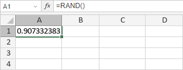
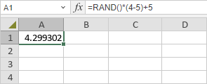

RAND funkcija
RAND funkcija je jedna od matematičkih i trigonometrijskih funkcija. Funkcija vraća nasumičan broj veći ili jednak 0 i manji od 1. Ne zahteva argumente.
Sintaksa
RAND()
Napomene
Kako primeniti RAND funkciju.
Primeri
Slika ispod prikazuje rezultat koji vraća RAND funkcija.

Da biste generisali nasumičan realan broj između a i b, koristite sledeću formulu zamenjujući a i b svojim vrednostima: =RAND()*(b-a)+a
